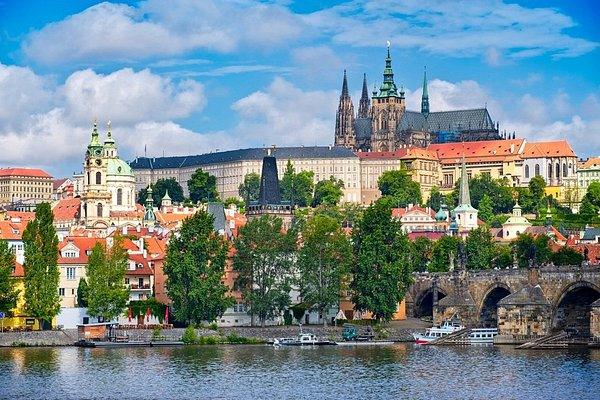
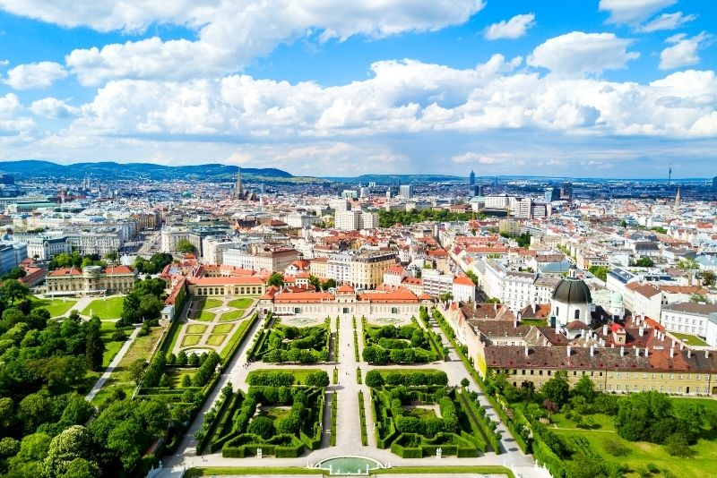
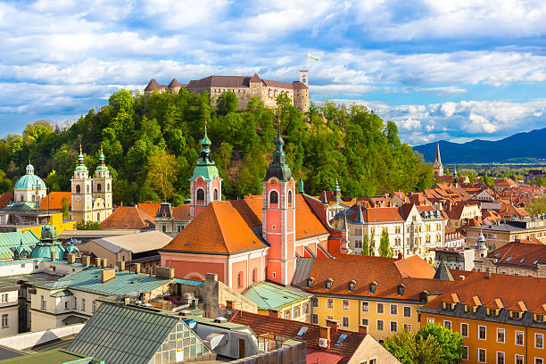

Welcome to my little blog for people who want to visit some Europeans capitals one day. Indeed, I will give you my personal opinion on the capitals that I have already visited during a small tour of Europe I went on in 2015 with my friends. In addition I will tell you how I experienced my tour of Europe.
Berlin, GERMANY

Berlin is one of the most beautiful cities in the world that I have visited. When I talk about beauty, I am not talking about skyscrapers like in New York, but something deeper - like the number of artists who are concentrated there and the simplicity of the people. Indeed, Berlin brings together everything that a tourist looks for. It's an artistic city, the people are very nice, and - for those who like to party - you'll find what they're looking for too. In addition, you will have no difficulty in communicating because Berliners are most often bilingual.
Praha, Czech Republic
Prague Prague has the advantage of being a small city with an extraordinary concentration of beautiful monuments and museums. In one day you could visit new Prague and old Prague. Then try tasting goulash in Prague, I'm not telling you that you'll like it, but it's good to discover new foods.
Vienna, AUSTRIA
Vienna Vienna has a lot of similarities with Berlin; it's a very artistic city with a lot of museums. It is a good city to visit with a family because it is quieter compared to Berlin.
Budapest, HUNGRY

Budapest here is a city that I found very hilarious. Here are some anecdotes: I went to a coffee bar where water was more expensive than beer. Also, every morning the receptionist at our hostel made me drink a drink that made me dizzy; apparently it was the custom. Beyond that, in Budapest you can go to the public sauna outside, and for festival lovers you could go to the Sziget which is one of the biggest festivales in Europe.
Lubjana, Slovenia

Lubjana is a very charming city which strongly resembles a village in the sense that there is hardly anyone in the city. Indeed, the density per inhabitant seems to be low and there is a lot of greenery in the city. For people who want to visit a European capital and feel like they are in the countryside, Lubjana is the destination for you.
Zagreb, CROATIA
Zagreb : Zagreb closely resembles Prague. Indeed in just one day we were able to visit the city. I would advise you to go to the south of Croatia, because there are charming little villages by the sea.
Contacte Me
- Adress: 50 Mon st, St Louis MO
- Phone: (444) 444-444